Although at the time of writing this tutorial page, WriterJournal still lacks a Cloud sync feature, but users can wisely use the export function to achieve the same result. It just requires the user to manually export the document file each time to a Cloud storage, but it works!!
From WriterJournal version 2.38 onwards, WriterJournal starts to support exporting files to cloud storage manually. Followings are exportable file types in WriterJournal:
Note that all the above file types are importable to WriterJournal except HTML and PDF files
In the following tutorial, we will export a document from device A to Google Drive storage as a Microsoft Word Docx file, access it through Google Drive and edit it using Google Docs, then import it back into device B for further editing:
Create a document and type "This document is created in device A" and export it to a Microsoft Word Docx file.
When selecting the path, don't select local storage but select Google Drive storage, Drive -> My Drive -> test.docx. Click save to start the upload process. (If you are on a mobile network rather than WIFI network, you may need to click resume in the notification panel to confirm the upload process)
After uploading, open your Google drive storage from your PC or laptop, double click the newly uploaded test.docx file to open it in Google Docs, in the editor page, add the following line: This document is further edited on Google Docs through website interface. Save the document.
Lastly, on device B, open WriterJournal and click import button, select the edited document test.docx by navigating to:Drive -> My Drive -> test.docx. After successful import, click on the newly imported test document for further editing.
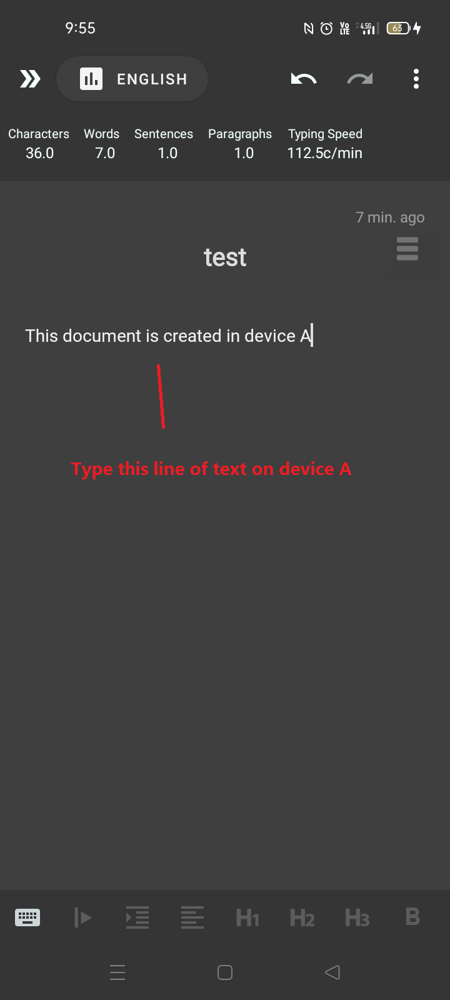
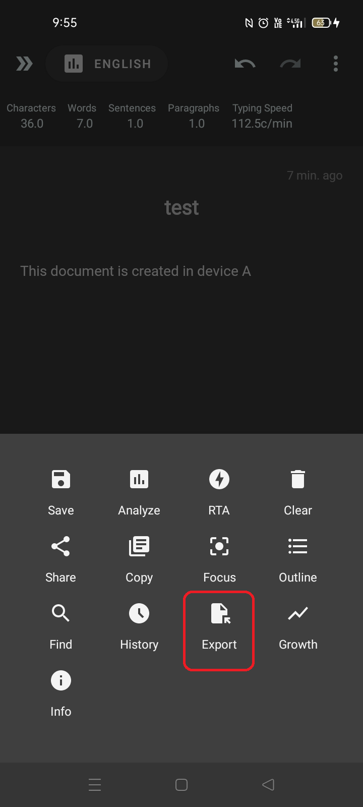
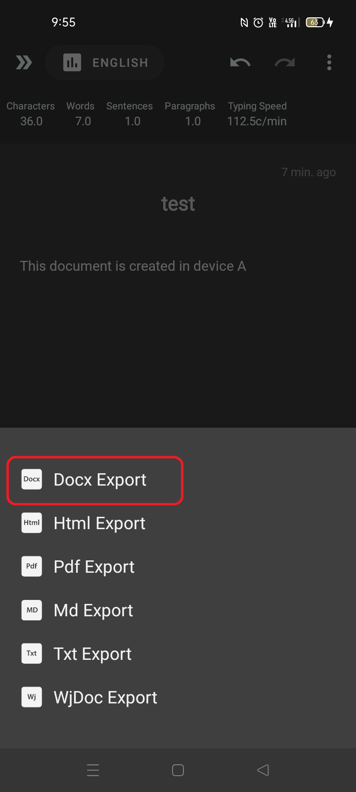
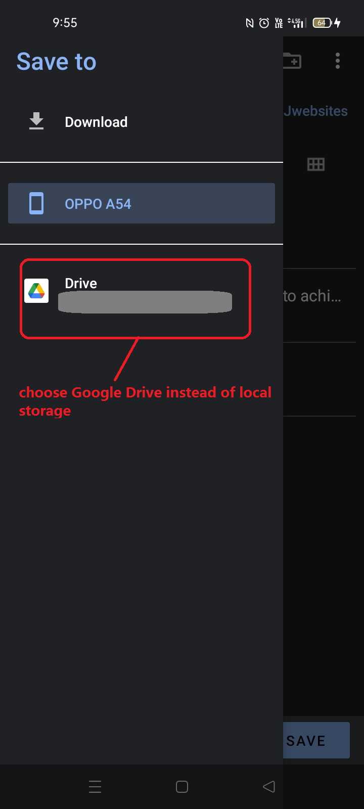
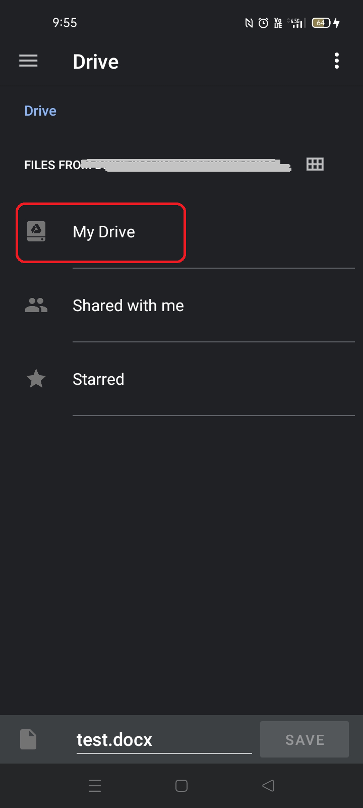
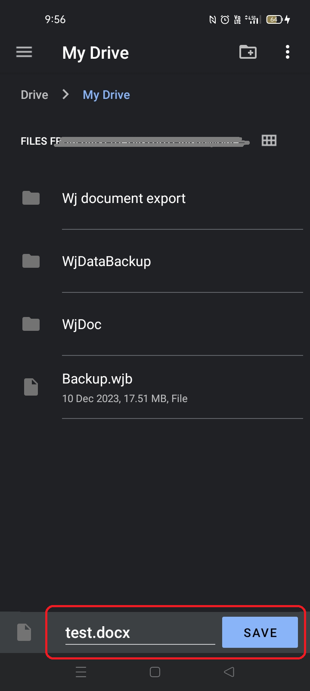
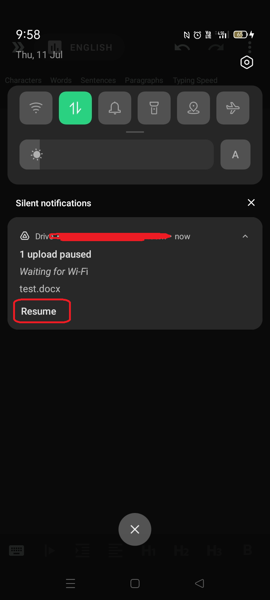
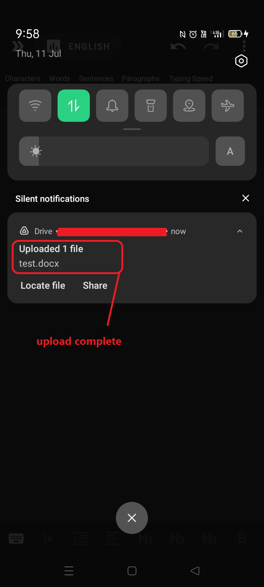
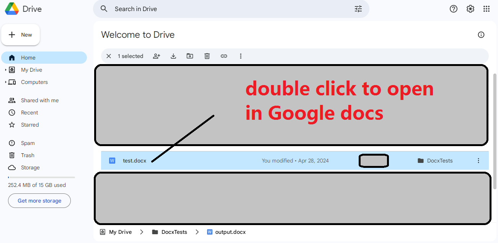
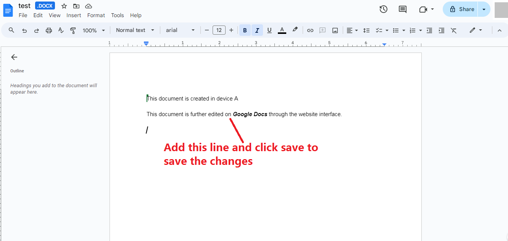
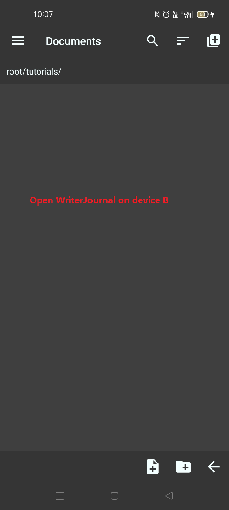
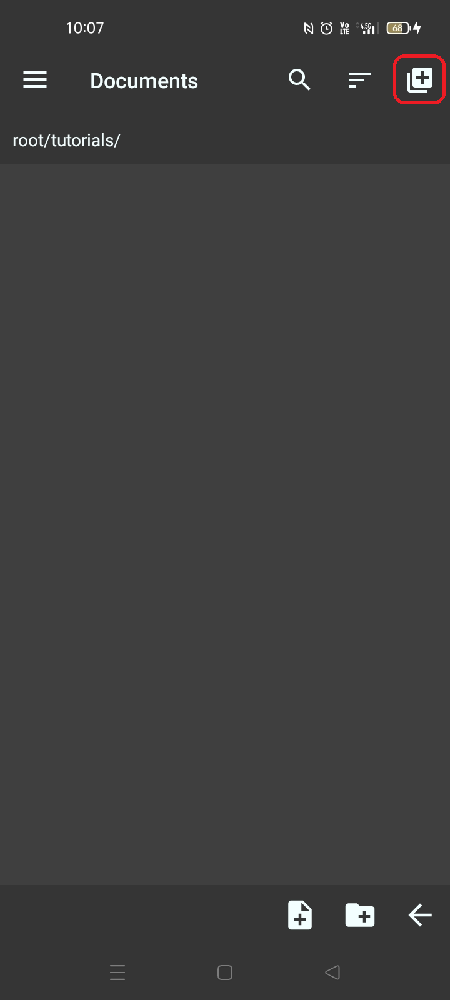
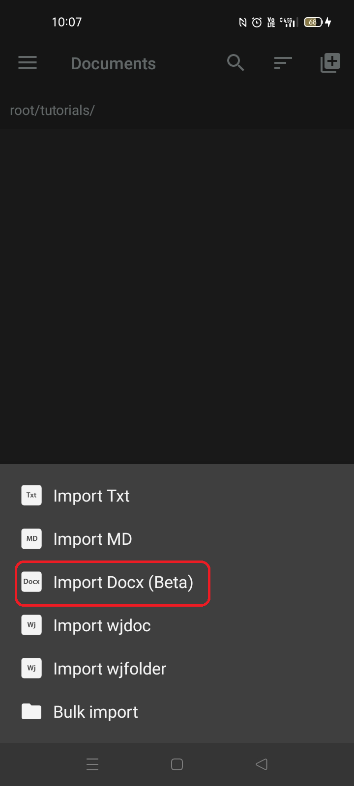
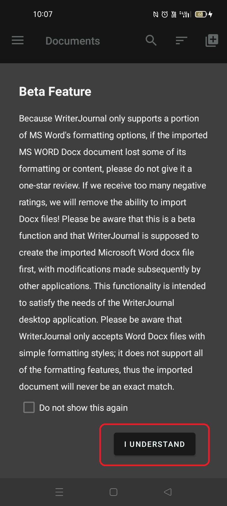
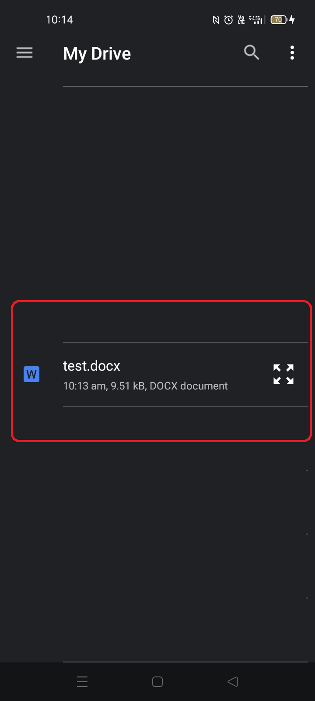
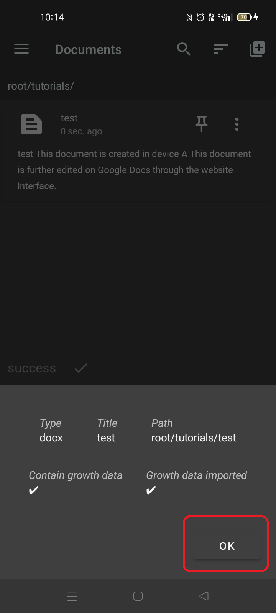
Congratulations! Now you have successfully learned how to transfer Microsoft Word Docx file between devices, the steps to transfer other types of file are the same, you just need to select the correct export method with corresponding import function.